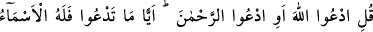
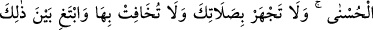
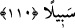

tevâzu ve secde ruhların hallerinden, ağlama ve huşû bedenlerin hallerindendir. Ruhlar
bedenlere ancak kulluktaki bu faydaları elde etmek için gönderilmiştir.
Kâşifî der ki: “Bu âyet, Kur’ân’daki secde âyetlerinin dördüncüsüdür. Hz. Şeyh (k.s.)
bu secdeye “ulemânın secdesi” adını vermiş ve şöyle demiştir: “Bu secdenin hakîkati
tecellî eder. Çünkü huşû, zâhire veya hem zâhire hem bâtına tecellî olmasından ileri
gelir. Cenâb-ı Hak haber verdi ki onların huşûu ziyâde olur. Huşû ise ancak ilâhî
tecellîden olur. O halde huşûun ziyâdeliği tecellînin ziyâdeliğine delildir. Bu takdirde
bu secde tecellî olur. Secde eden kimseye bu secdenin bereketiyle tecellînin feyzinden
hissedar olması ve tevâzuunun (hudû‘) artması gerektir. Allah neye tecellî ederse
mutlaka o şey O’na boyun eğer.
Kadîm olan taraf-ilâhîden tecellî nûrunun parıltısı
Hâdis varlık üzerine düşer de o parça parça dökülür
İmdi orada boğun eğmek (hudû‘) varlığın zevâlidir
Allah katında yükseklik bu tevâzuu gerektirir
Şu halde varlığı kendi rızanla vermen ve yok etmen gerekir. Çünkü Allah Teâlâ ancak
fenâ ehline tecellî eder. Evet, fenâ da zikredilen haberin delâlet ettiği gibi, tecellîden
kaynaklanır.
Mesnevî’de şöyle der:
Kadîm olan Allah’ın sıfatları tecellî edince
Hâdisin/sonradan olanların sıfatlarını yakar, yok eder
110. De ki: “İster Allah deyin, ister Rahman deyin. Hangisini deseniz olur. Çünkü
en güzel isimler O’na hastır.” Namazında yüksek sesle okuma; onda sesini fazla da
kısma; ikisinin arası bir yol tut.
Rivâyete göre yahudiler Rasûlullah (s.a.)’e: “Sen Rahmân’ı az zikrediyorsun. Halbuki
Allah Tevrât’ta onu çok zikretmiştir.” dediler. Bunun üzerine bu âyet indi.
“De ki: “İster Allah deyin, ister Rahman deyin.” Burada ‘ed-duâ’ seslenmek,
yakarmak anlamında değil isimlendirmek anlamındadır. “Allah” ve “Rahmân”
kelimeleri ile kasdedilen müsemmâ (isimlendirilen) değil isimdir. Âyetteki “Ev (veyâ)”
ifâdesi, iki isimden isteneni söylemekte serbest bırakmak içindir. Maksad ikisinin de
söylenmesinin güzelliğinde ve müsemmâyı ifâde etmekte eşit olduklarını belirtmektir.